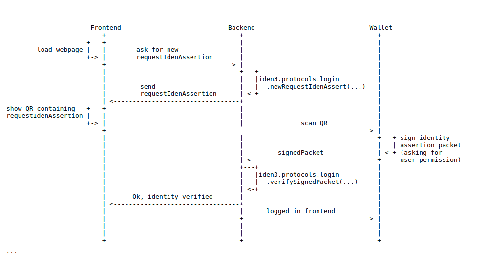

Centralized login use case
Overview
This document will guide you through the steps required to integrate iden3's technology into your application's login.
- Date
- 2019-04-05
Introduction
Iden3 is a complete decentralized identity management solution that allows users to leverage their pre-existing validated identities to proof they are who they claim to be, saving them the hassle of having to individually register with each service that requires a validated identification. One of the direct applications of iden3's technology is to allow web services to reuse these identities for login into their portals.
The diagram below shows the steps taken by your back-end to enable access to your application using iden3 identity system once the user requests to login.
 Iden3 provides the SDK to take care of requesting and verifying identity so that the user can be authenticated.
Platforms supported
Pre-requirements
Minimum requirements for a functional centralized login include:
- iden3 wallet service has been deployed
- User attempting to login has at least one valid identity.
Integration
A JavaScript reference implementation of how a third party can integrate iden3's solution to login into their application can be found at https://github.com/iden3/centralized-login-demo. In this example the external service includes a front-end and a back-end server. We will assume this front-end/back-end division during our integration overview.
Front-End
On the front-end side you will typically need to embed a button to start the login process, and a place to display a QR code that the user can scan to complete the authentication. After the button is pressed, the front-end makes a request to the back-end to start the identity authentication and waits for the response containing the QR code to be displayed and scanned by the user.
In the provided reference implementation this is achieved by JavaScript function getLoginData() found in frontend/index.js. This code shows how to :
- Send a request for a new requestIdenAssert packet to the centralized application back-end
- Open a websocket between front-end and back-end
- Display QR code containing the requestIdenAssert packet to be signed by iden3's wallet
Back-End
Generating requests of identity assertion
On the back-end side you will need to prepare a new API endpoint to handle the requestIdenAssert() petitions from the front-end. In the reference implementation we use GET/login by calling JavaScript function
const signatureRequest = iden3.protocols.login.newRequestIdenAssert(nonceDB, origin, timeout);
or Go function:
requestIdenAssert := NewRequestIdenAssert(nonceDb, origin, timeout)
where
- nonceDB: is a NonceDB object generated by calling an API function and stored in a RAM database
- origin: domain of the emitter of the request, for example 'myweb.com'
- timeout: timeout in seconds, for example 2 minutes (120).
nonceDB is obtained by calling the following JavaScript function:
const nonceDB = new iden3.protocols.NonceDB();
or Go function:
``` {.sourceCode .c nonceDb := core.NewNonceDb()}
Once you have the *signatureRequest* object, you can return it back to
the front-end so that it can be displayed.
#### Verifying signedPacket
On the back-end you will also need to prepare a new API endpoint to
handle the responses from iden3 wallet containing the *signedPacket*. In
the reference implementation we use *POST /login* to allow the walled to
send the signed data.
To perform the verification in the newly added endpoint you just need to
call *iden3js* library:
``` {.sourceCode .javascript}
const verified = iden3.protocols.login.verifySignedPacket(nonceDB, origin, signedPacket);
or go-iden3 library:
verified, err := signedPacketVerifier.
VerifySignedPacketIdenAssert(signedPacket, nonceDB, origin)
where
- nonceDB: is the NonceDB object generated earlier.
- origin: domain of the emitter of the request, for example 'myweb.com'
- signedPacket: signed packet sent by iden3's wallet.
- verified: is null if verification fails.
SDK installation
iden3js
Installation
npm install --save @iden3/iden3
Import
const iden3 = require('iden3');
go-iden3
Installation
go get github.com/iden3/go-iden3
Import
import { "github.com/iden3/go-iden3/services/signedpacketsrv" }